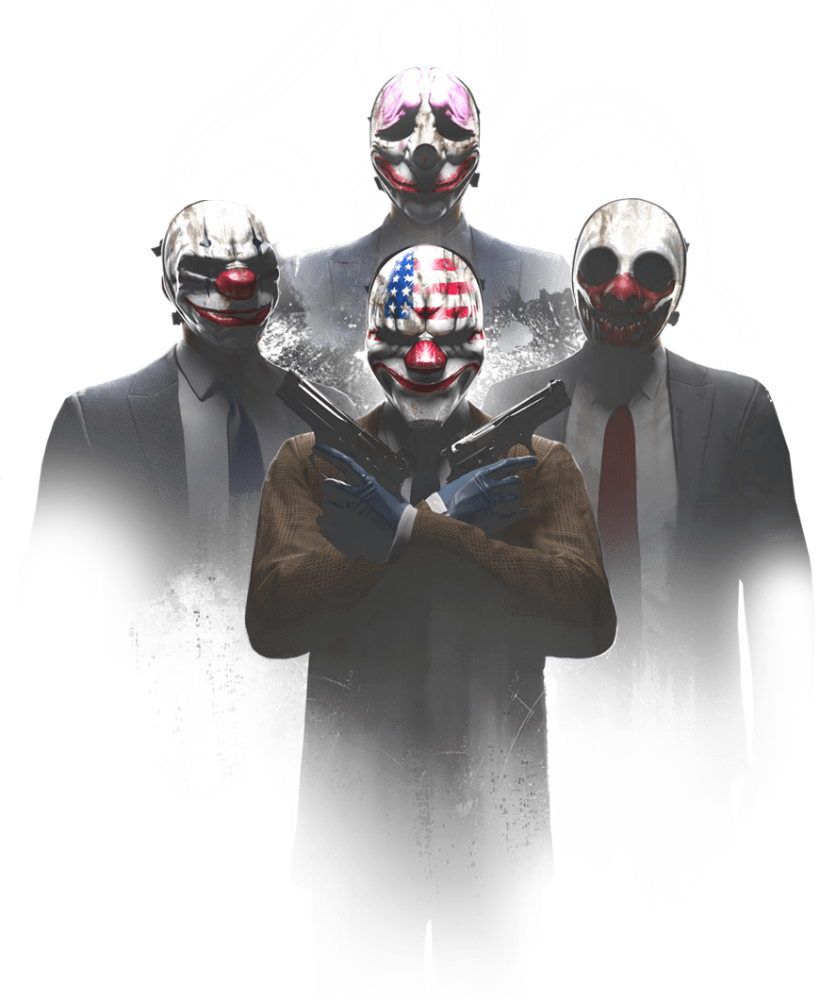
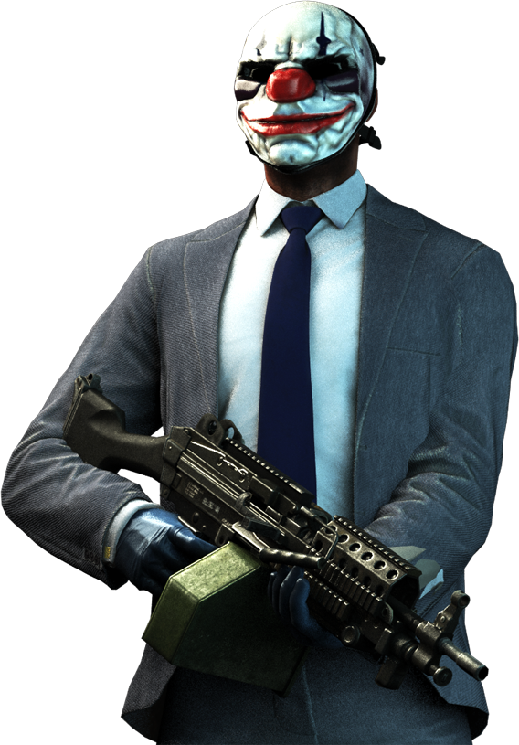
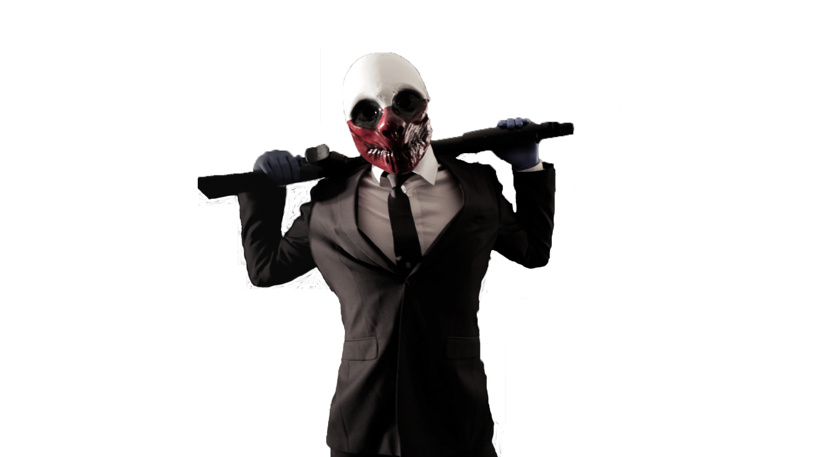
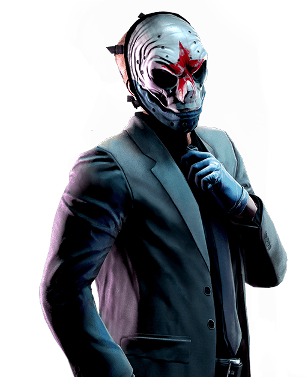

PAYDAY GANG

Chains
Чейнс был проблемным подростком. После долгих лет прыжков между приёмными семьями и школами для малолетних преступников, он стал военным. Там он стал великолепным солдатом, но ненавидел повиноваться приказам.
Чейнс ушёл из армии и стал солдатом удачи, предлагая свой военный опыт тем, кто готов заплатить побольше.

Wolf
Вулф был законопослушным гражданином большую часть своей жизни. Во время экономического кризиса в 2000-х, компания, возглавляемая Вульфом, вела дела с одним неблагонадёжным клиентом. Боясь лишиться всего, клиент аннулировал договор, чем привёл компанию к банкротству.
Сейчас Вулф строит криминальную карьеру с той же решимостью, которая двигала им ещё во время управления собственной компанией.

Sokol
Сокол был нападающим хоккейной команды в Санкт-Петербурге, но в перерывах между матчами спортсмен грабил казино по территории всего СНГ. Пустые хранилища остались от Москвы до Минска.
Бэйн заметил грабителя и связался с ним, предложив получить 1,4 миллиона долларов за дело, переезд в США и место в банде PAYDAY. Сокол проявил свои способности, договорился с Бэйном на 1,7 миллиона и отправился в Вашингтон.